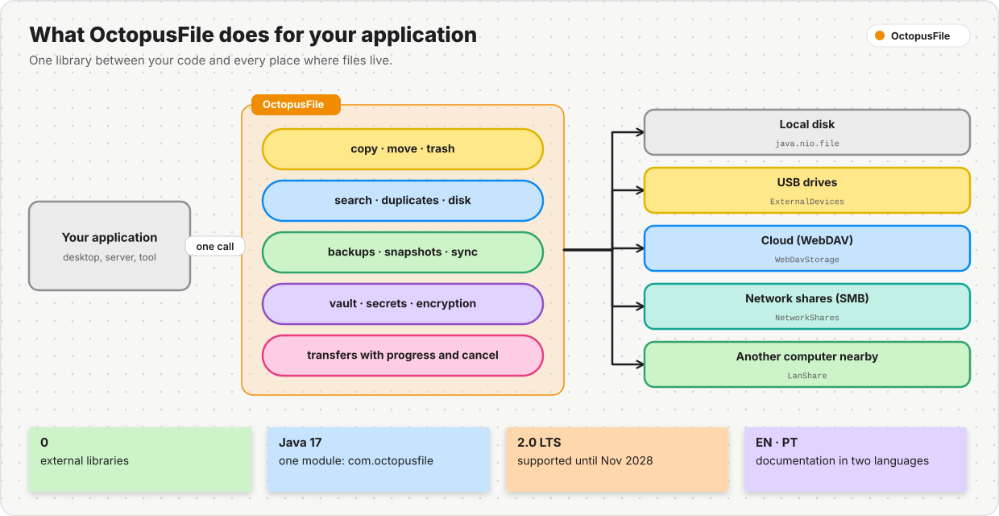
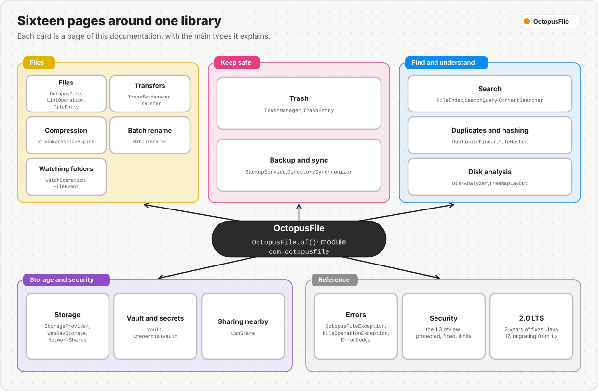
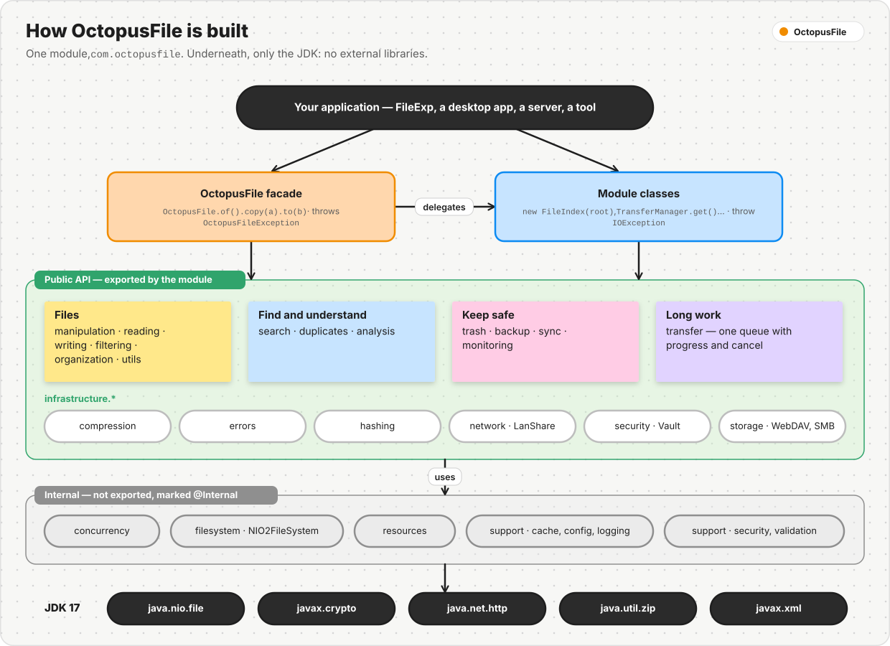
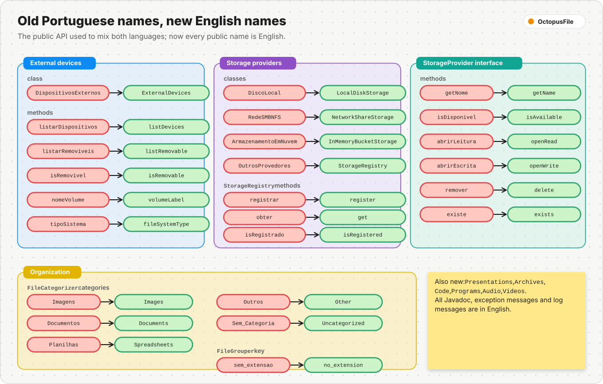
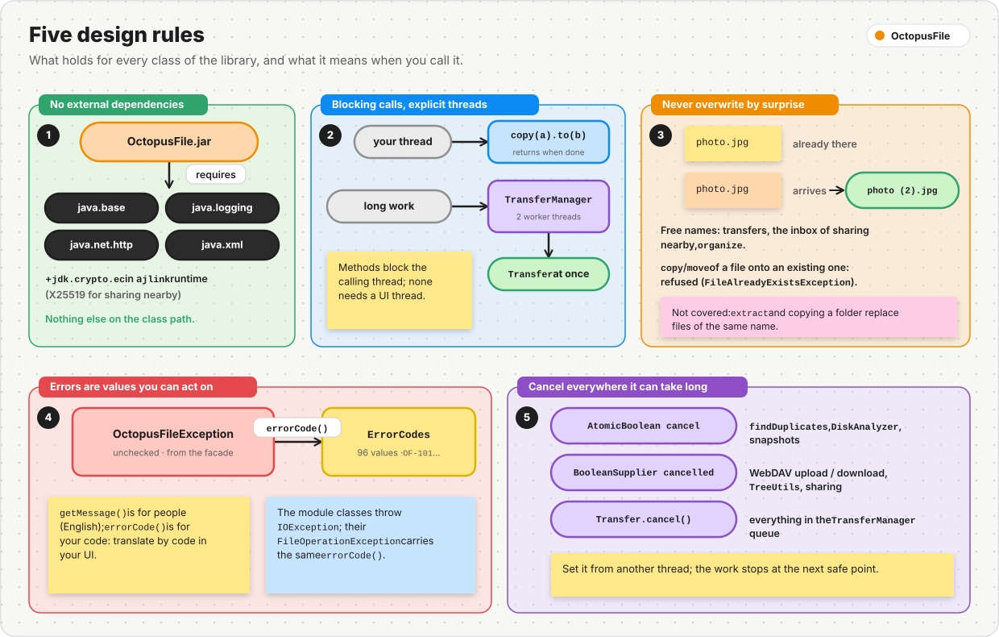
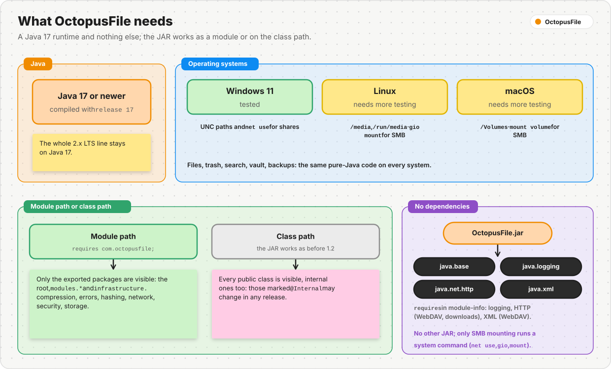

OctopusFile

A file toolkit for Java 17+ with no external libraries: everything is built on the JDK (java.nio.file, java.net.http, javax.crypto, java.util.zip).
It is the engine of the FileExp file manager and covers what a file-heavy desktop or server application usually has to write by hand: transfers with progress and cancel, a restorable trash, an instant name index, batch rename with preview, duplicate finder, disk analysis, backups and sync, an encrypted vault, WebDAV and SMB storage, and encrypted file sharing on the local network.
javaOctopusFile octo = OctopusFile.of();
octo.write(Path.of("notes.txt")).text("hello\n");
octo.copy("notes.txt").to("backup/notes.txt");
TrashEntry gone = octo.moveToTrash("backup/notes.txt"); // restorable
octo.restoreFromTrash(gone.getId());
Feature pages#

| Page | What it covers | Main types |
|---|---|---|
| Files | copy, move, delete, list, read, write | OctopusFile, ListOperation, FileEntry |
| Errors | unchecked in the facade, IOException in the modules, machine-readable codes | OctopusFileException, FileOperationException, ErrorCodes |
| Trash | restorable trash, the same on every OS | TrashEntry, TrashManager |
| Transfers | queue with progress, speed, ETA and cancel | TransferManager, Transfer |
| Search | instant name index, search inside files | FileIndex, SearchQuery, ContentSearcher |
| Duplicates and hashing | duplicate files by content, SHA-256 | DuplicateFinder, FileHasher |
| Disk analysis | what fills a disk, treemap layout | DiskAnalyzer, TreemapLayout |
| Batch rename | templates, find/replace, preview, all-or-nothing | BatchRenamer |
| Compression | ZIP in streaming, safe extraction | ZipCompressionEngine |
| Backup and sync | dated ZIP backups, copy-changes, mirror | BackupService, DirectorySynchronizer |
| Watching folders | create / modify / delete events | WatchOperation, FileEvent |
| Storage | external devices, WebDAV clouds, SMB shares, synced cloud folders | StorageProvider, WebDavStorage, NetworkShares |
| Vault and secrets | encrypted folder, secrets at rest | Vault, CredentialVault |
| Sharing nearby | encrypted transfers between computers on a LAN | LanShare |
| Security | the 1.3 review: what is protected, what was fixed, the limits | — |
| 2.0 LTS | the LTS policy (2 years, Java 17), phases, migrating from 1.x | — |
This documentation is also in Portuguese: Português.
Every example in these pages is also in selftest/.../DocExamplesTest.java, so it is compiled and run by ant selftest: if an example stops working, the build says so.
Public and internal API#

Package (com.octopusfile…) | Status |
|---|---|
(root) — OctopusFile facade, operations, FileEntry, GlobalConfiguration | public |
modules.* — analysis, backup, duplicates, filtering, manipulation, monitoring, organization, reading, search, sync, transfer, trash, utils, writing | public |
infrastructure.compression, .errors, .hashing, .network, .security, .storage | public |
infrastructure.concurrency, .filesystem, .resources | internal |
support.* — cache, config, logging, security, validation | internal |
Internal packages and types are marked with @Internal. They are public in Java terms only because other OctopusFile packages use them; they may change in any release. The same applies to the constructors of the modules that take internal types (for example FileMover(NIO2FileSystem, FileValidator, …)): use the constructor without arguments.
Since 1.2.0 the JAR is the module com.octopusfile: the internal packages are not exported — see module-info.java. On the classpath the JAR works as before.
Renamed in the English API#

The public API used to mix Portuguese and English. If you used the old names:
| Old | New |
|---|---|
DispositivosExternos (listarDispositivos, listarRemoviveis, isRemovivel, nomeVolume, tipoSistema) | ExternalDevices (listDevices, listRemovable, isRemovable, volumeLabel, fileSystemType) |
DiscoLocal | LocalDiskStorage |
RedeSMBNFS | NetworkShareStorage |
ArmazenamentoEmNuvem | InMemoryBucketStorage |
OutrosProvedores (registrar, obter, isRegistrado) | StorageRegistry (register, get, isRegistered) |
StorageProvider: getNome, isDisponivel, abrirLeitura, abrirEscrita, remover, existe | getName, isAvailable, openRead, openWrite, delete, exists |
FileCategorizer categories Imagens, Documentos, Planilhas, … , Outros, Sem_Categoria | Images, Documents, Spreadsheets, Presentations, Archives, Code, Programs, Audio, Videos, Other, Uncategorized |
FileGrouper key sem_extensao | no_extension |
All Javadoc, exception messages and log messages are now in English.
Design rules#

- No external dependencies. A runtime made with
jlinkneedsjava.base,java.net.http(WebDAV, downloads),java.xml(WebDAV, Office documents),java.loggingandjdk.crypto.ec(sharing nearby). - Blocking calls, explicit threads. Methods block; long work goes through
TransferManager(progress, cancel) or your own executor. No method needs a UI thread. - No silent overwrite of a file. Copying or moving a file refuses an existing target (
FileAlreadyExistsException); restoring from the trash never replaces anything; received files andTransferManagercopies get free names (photo (2).jpg). Since 2.0.4 copying a folder onto an existing folder merges the folders but refuses (before copying anything) if a file would be replaced; to replace on purpose, setGlobalConfiguration.setIsOverwriteByDefault(true). Know the exceptions:extract/restoreToreplace files with the same name. - Never through a link (since 2.0.3). A walk never goes into a symbolic link or an NTFS junction (
mklink /J): deleting a folder deletes a link inside it as a link, never what it points to; copies, backups, ZIPs, the trash, sync, the index, the analysis, duplicates and watching skip links. A folder you name yourself (the root of a sync or of an analysis) is used even if it is a junction; links inside it are not followed. - Errors are values you can act on. One exception type,
OctopusFileException, with anErrorCodesvalue. - Cancel everywhere it can take long. Long operations take an
AtomicBoolean, aBooleanSupplieror run as aTransferyou can cancel.
Requirements#

Java 17 or newer. Tested on Windows 11; the code paths for Linux and macOS (mounts, gio, /Volumes) exist but need more testing.
DocExamplesTest